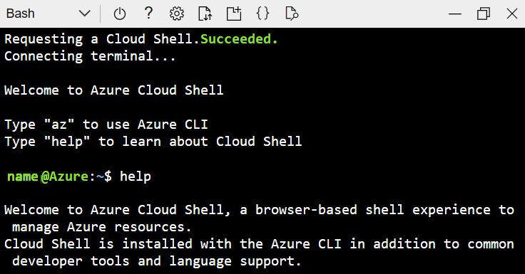
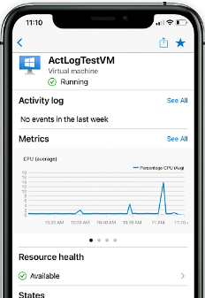

You can configure and manage Azure using a broad range of tools and platforms. There are tools available for the command line, language-specific Software Development Kits (SDKs), developer tools, tools for migration, and many others.
Tools that are commonly used for day-to-day management and interaction include:
- Azure portal for interacting with Azure via a Graphical User Interface (GUI)
- Azure PowerShell and Azure Command-Line Interface (CLI) for command-line and automation-based interactions with Azure
- Azure Cloud Shell for a web-based command-line interface
- Azure mobile app for monitoring and managing your resources from your mobile device
There are also Azure SDKs for a range of languages and frameworks and REST APIs to help manage and control Azure resources programmatically.
When you're starting out with Azure, you'll probably use the Azure portal most often.
Azure portal
The Azure portal is a public website you can access with any web browser. Once you sign in with your Azure account, you can create, manage, and monitor Azure services and resources. In the Azure portal, you can use search to find different types of services and get links for help on a topic. The Azure portal also guides you through complex administrative tasks by using wizards and tooltips.
{kind=link}
The Azure portal is often the best interface for carrying out single tasks, or when you want to look at configuration options in detail.
Generally speaking, the portal doesn't let you automate repetitive tasks. For example, to set up multiple VMs, you'd need to create them one at a time. This process might make the portal approach less ideal for complex tasks that involve repetition. For these types of tasks, Azure PowerShell and Azure CLI can be helpful.
Azure PowerShell
Azure PowerShell lets you connect to your Azure subscription and manage resources.
For example, Azure PowerShell provides the
New-AzVM
command that creates a virtual machine for you inside your Azure subscription. To use it, you launch PowerShell and install the Azure PowerShell module if you haven't already done so. Then, sign in to your Azure account using the command
Connect-AzAccount
and issue a command such as:
New-AzVM `
-ResourceGroupName "MyResourceGroup" `
-Name "TestVm" `
-Image "UbuntuLTS" `
...
Azure CLI
Azure CLI is a command-line program that connects to Azure and executes administrative commands on Azure resources. Azure CLI can run on Windows, Linux, or macOS.
For example, to create a VM, you open a command prompt window and install the Azure CLI if you haven't already done so. Then, sign in to Azure using the command
az login
and issue a command such as:
az vm create \
--resource-group MyResourceGroup \
--name TestVm \
--image Ubuntu2204 \
--generate-ssh-keys \
...
Azure Cloud Shell
Azure Cloud Shell is an interactive, authenticated, browser-accessible shell for managing Azure resources using scripting tools like Azure CLI or Azure PowerShell. The Cloud Shell also has many other developer tools available, such as text editors, source-control tools, databases, and more.

You can access Azure Cloud Shell from within the Azure portal or by navigating to https://shell.azure.com .
Azure mobile app

The Microsoft Azure mobile app allows you to access, manage, and monitor all your Azure accounts and resources from your iOS or Android phone or tablet.
Once installed, you can perform many common Azure tasks, such as:
- Check the current status and critical metrics of your services.
- Stay informed with notifications and alerts about important health issues.
- Review the latest Azure alerts.
- Start, stop, and restart virtual machines or web apps.
- Connect to your virtual machines.
- Manage permissions with role-based access control (RBAC).
- Use the Azure Cloud Shell to run saved scripts or perform administrative tasks.
In the rest of this module, we'll take a closer look at the portal approach.